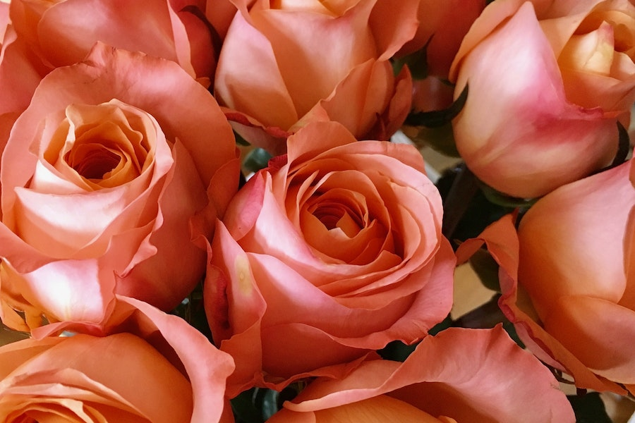

Imagens




As rosas são flores que têm origem na Ásia, especificamente na região que hoje engloba China, Índia, Pérsia e áreas adjacentes. Elas são cultivadas há milênios e têm uma rica história cultural em muitas civilizações.
As rosas são arbustos ou trepadeiras pertencentes ao gênero Rosa e à família Rosaceae. Elas são conhecidas por suas flores com pétalas macias e geralmente perfumadas, que vêm em uma ampla variedade de cores, incluindo vermelho, rosa, amarelo, branco e até mesmo roxo.
Uma das características mais notáveis das rosas é a diversidade de cores que podem apresentar. Cada cor tem seu próprio significado simbólico, tornando as rosas uma escolha popular para expressar sentimentos e emoções.
As rosas têm uma rica simbologia cultural em todo o mundo. Elas frequentemente representam o amor, a paixão, a beleza e a gratidão. Rosas vermelhas são particularmente associadas ao amor romântico.
Além de seu valor ornamental, as rosas também têm aplicações em perfumaria, culinária e medicina herbal. Óleos essenciais de rosas são usados em perfumes e produtos de cuidados pessoais.
Os preços das rosas podem variar amplamente, dependendo da variedade, qualidade e época do ano. Em geral, você pode encontrar buquês de rosas em floriculturas por preços que variam de R$ 30 a R$ 100 ou mais, especialmente em ocasiões especiais, como o Dia dos Namorados.
Para manter rosas saudáveis e vibrantes, é importante fornecer cuidados adequados, incluindo rega regular, exposição ao sol, poda e proteção contra pragas. O cultivo de rosas também requer solo bem drenado e rico em nutrientes.
Existem milhares de variedades de rosas disponíveis, cada uma com suas próprias características de flores, folhagens e aromas. Algumas das variedades mais populares incluem as rosas Grandiflora, Floribunda, Híbridas de Chá e Miniatura.
As rosas desempenharam papéis significativos em várias culturas ao longo da história. Elas são frequentemente mencionadas em poemas, literatura e arte, simbolizando uma variedade de significados.
As rosas são populares em jardinagem e paisagismo, com muitos jardins dedicados exclusivamente a essas flores. Elas podem ser cultivadas em jardins, canteiros, vasos e até mesmo como arbustos ornamentais.
As rosas são frequentemente presenteadas em ocasiões especiais, como aniversários, casamentos e eventos comemorativos. A cor das rosas escolhida pode transmitir diferentes emoções e sentimentos.
O óleo essencial de rosa, obtido das pétalas da rosa, é altamente valorizado na perfumaria devido ao seu aroma doce e floral. Ele é usado na criação de perfumes luxuosos e produtos de cuidados com a pele.